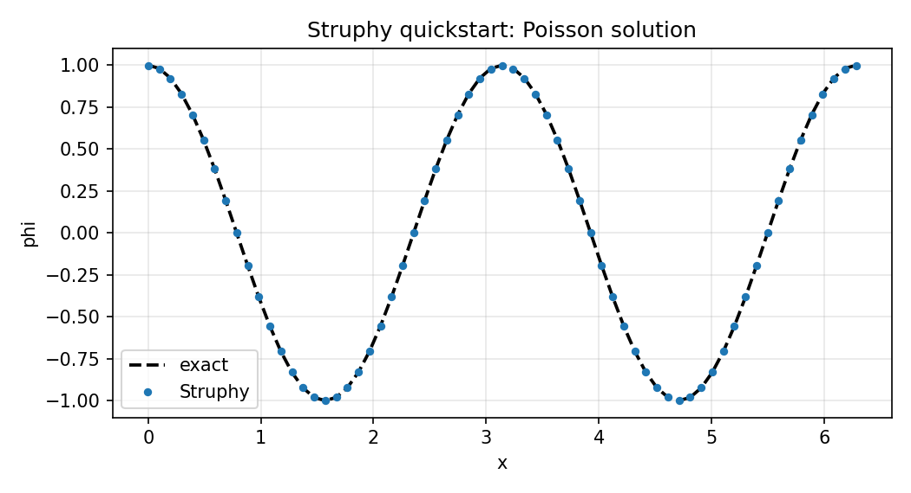
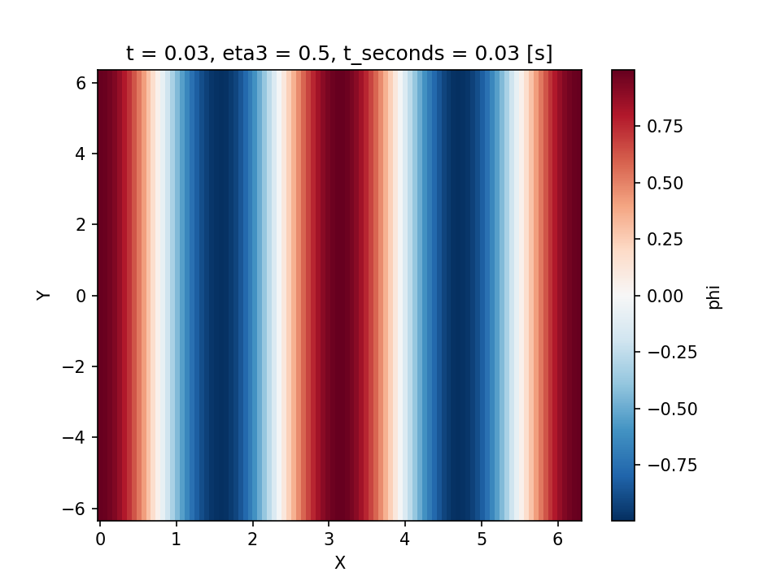

Quickstart#
Struphy is a Python API for solving PDEs with structure-preserving discretizations. This quickstart shows how to solve a simple problem with minimal input: a 1D Poisson solve.
For interactive tutorials (no local install), use mybinder. For ready-to-run simulations of many models, see the struphy-examples repository (Ready-To-Run Examples: struphy-examples); for more on the API, see Userguide and the tutorial collection. An overview of the models, the numerical methods and a gallery of examples is on the Struphy website https://struphy-hub.github.io/.
Solve Poisson In A Few Steps#
Make sure that Struphy is installed and compiled (see Install and compile).
Save the code below as params_poisson.py. By default, output is written to
sim_1/ in the directory from which you launch the script (change this with
EnvironmentOptions).
We search for a potential \(\phi(x, y)\) satisfying the Poisson equation
for a given source term \(\rho(x)\) on a doubly periodic 2D domain.
Import the API and choose a model.
import numpy as np
from matplotlib import pyplot as plt
from struphy import Simulation, domains, grids, perturbations
from struphy.models import Poisson
Create the
Poissonmodel.
model = Poisson()
3. This model features the Propagator PoissonSolve under propagators.poisson.
For periodic boundary conditions we will stabilize via options.
stab_eps = 1e-8
model.propagators.poisson.options = model.propagators.poisson.Options(
stab_eps=stab_eps,
)
Add a manufactured term \(\rho(x) = (k^2 + \epsilon)\cos(kx)\) to the
sourcevariable.
Lx = 2.0 * np.pi
Ly = 4.0 * np.pi
mode = 2
k = mode * 2.0 * np.pi / Lx
source_amp = k**2 + stab_eps
fun = perturbations.ModesCos(ls=(mode,), amps=(source_amp,))
model.em_fields.source.add_perturbation(fun)
Build domain and grid, then instantiate a simulation.
domain = domains.Cuboid(r1=Lx, l2=-Ly / 2, r2=Ly / 2)
grid = grids.TensorProductGrid(num_elements=(64, 64, 1))
sim = Simulation(model=model, domain=domain, grid=grid)
Run the simulation.
sim.run()returns anOutputobject, the entry point for all post-processing. For plots and diagnostics made for Struphy output (out.plot,out.analysisand.plasma.ploton every product), install the separate package plasma-plots withpip install "struphy[pproc]";Outputloads it automatically.
out = sim.run()
Evaluate the potential on a line along \(\eta_1\) and compare to the exact solution.
out.evaluate()takes a"species/variable"name, evaluates the saved spline field on the given logical coordinates, and returns a labeledxarray.DataArray. Scalars fix a direction (here \(\eta_2 = \eta_3 = 0.5\)); omitted directions stay on the cell centres of the simulation grid.t=-1selects the last saved snapshot. The array also carries the physical coordinatesX, Y, Zso that xarray’s.plot()can use either coordinate system.
fig, axs = plt.subplots(1, 2, figsize=(12, 4))
eta1 = np.linspace(0, 1, 100)
phi_1d = out.evaluate("em_fields/phi", eta1=eta1, eta2=0.5, eta3=0.5, t=-1)
x = phi_1d["X"]
phi_exact = np.cos(k * x)
phi_exact_logical = np.cos(Lx * k * eta1)
phi_1d.plot(ax=axs[0], label="Struphy") # plot along eta1 (default)
phi_1d.plot(ax=axs[1], x="X", label="Struphy") # plot along physical X
axs[0].plot(eta1, phi_exact_logical, "k--", lw=1.8, label="exact")
axs[1].plot(x, phi_exact, "k--", lw=1.8, label="exact")
for ax in axs:
ax.legend()
ax.grid(alpha=0.3)
fig.savefig("quickstart_poisson_phi.png", dpi=150)
plt.show()

Exact (dashed) and Struphy solutions from Step 7, along \(\eta_1\) (left) and \(x\) (right).#
Evaluate on a 2D logical grid and plot in physical coordinates.
eta = np.linspace(0, 1, 100)
phi_2d = out.evaluate("em_fields/phi", eta1=eta, eta2=eta, t=-1)
phi_2d.plot(x="X", y="Y")
plt.savefig("quickstart_poisson_phi_2d.png", dpi=150)
plt.show()

Struphy solution \(\phi(x, y)\) from Step 8 in physical coordinates.#
out can also be created later from the output folder alone, e.g. in a separate
post-processing script, via out = Output("sim_1"); the model, domain and numerical
options are reconstructed from run_metadata.json.
Full script (save as params_poisson.py and run with python params_poisson.py):
import numpy as np
from matplotlib import pyplot as plt
from struphy import Simulation, domains, grids, perturbations
from struphy.models import Poisson
model = Poisson()
stab_eps = 1e-8
model.propagators.poisson.options = model.propagators.poisson.Options(
stab_eps=stab_eps,
)
Lx = 2.0 * np.pi
Ly = 4.0 * np.pi
mode = 2
k = mode * 2.0 * np.pi / Lx
source_amp = k**2 + stab_eps
fun = perturbations.ModesCos(ls=(mode,), amps=(source_amp,))
model.em_fields.source.add_perturbation(fun)
domain = domains.Cuboid(r1=Lx, l2=-Ly / 2, r2=Ly / 2)
grid = grids.TensorProductGrid(num_elements=(64, 64, 1))
sim = Simulation(model=model, domain=domain, grid=grid)
if __name__ == "__main__":
# sim.run() returns an Output object for post-processing
out = sim.run()
# out.evaluate() evaluates a saved field on logical coordinates (eta1, eta2, eta3)
# and returns a labeled xarray.DataArray; scalar etas fix a direction, omitted etas stay
# on the simulation grid's cell centres, t=-1 selects the last snapshot. Physical coordinates X, Y, Z are attached.
fig, axs = plt.subplots(1, 2, figsize=(12, 4))
eta1 = np.linspace(0, 1, 100)
phi_1d = out.evaluate("em_fields/phi", eta1=eta1, eta2=0.5, eta3=0.5, t=-1)
x = phi_1d["X"]
phi_exact = np.cos(k * x)
phi_exact_logical = np.cos(Lx * k * eta1)
# xarray plotting: along eta1 by default, or along any attached coordinate
phi_1d.plot(ax=axs[0], label="Struphy")
phi_1d.plot(x="X", ax=axs[1], label="Struphy")
axs[0].plot(eta1, phi_exact_logical, "k--", lw=1.8, label="exact")
axs[1].plot(x, phi_exact, "k--", lw=1.8, label="exact")
for ax in axs:
ax.legend()
ax.grid(alpha=0.3)
fig.savefig("quickstart_poisson_phi.png", dpi=150)
plt.show()
# 2D evaluation on a logical tensor-product grid, plotted in physical coordinates
eta = np.linspace(0, 1, 100)
phi_2d = out.evaluate("em_fields/phi", eta1=eta, eta2=eta, t=-1)
phi_2d.plot(x="X", y="Y")
plt.savefig("quickstart_poisson_phi_2d.png", dpi=150)
plt.show()
Same Workflow For All Models#
The same Simulation API is reused across models. For example, replace Poisson with Maxwell:
from pathlib import Path
from struphy import EnvironmentOptions, Simulation, perturbations
from struphy.models import Maxwell
model = Maxwell()
model.em_fields.e_field.add_perturbation(
perturbations.ModesCos(ls=(1,), amps=(1e-2,), comp=1)
)
env = EnvironmentOptions(sim_folder="sim_data")
sim = Simulation(model=model, env=env, params_path=__file__)
if __name__ == "__main__":
sim.run()
Check Models for more models and their specific options.
Generate A Default Parameter File#
You can generate a ready-to-edit parameter file for any model from the CLI:
struphy params Poisson
This writes params_Poisson.py in your current directory. You can open and edit it, then run with:
python params_Poisson.py
As all data structures in Struphy are written for MPI, you can run the same script with mpirun to use multiple processes:
mpirun -n 4 python params_Poisson.py
Ready-To-Run Examples: struphy-examples#
The repository struphy-examples collects simulations of physics scenarios and numerical test cases, for example Landau damping, the two-stream and Weibel instabilities, the ITPA TAE benchmark, the Cyclone base case or elliptic problems on tori. The folders are sorted by model and then by case; each case contains
params_*.py: the parameter file, which sets up and runs the simulation,pproc_*.py: the post-processing script, which reads the output and creates the figures.
The physics and the expected results are described in the docstring at the top of each parameter file.
The repository is updated with every Struphy release and tagged with its version, so clone the tag that
matches your installation (struphy --version prints it):
git clone --branch vX.Y.Z https://github.com/struphy-hub/struphy-examples.git
cd struphy-examples/VlasovAmpereOneSpecies/two_stream
python params_two_stream.py # or: mpirun -n 4 python params_two_stream.py
python pproc_two_stream.py
The output folder is created beside the scripts, and the post-processing script finds it there;
both scripts accept --help.
A good way to set up your own simulation is to copy the closest example and adapt it.
To add an example, open a pull request into the devel branch of Struphy with your case in its
examples/ folder.
Using Struphy With AI Coding Agents#
Struphy ships a usage guide for AI coding agents such as Claude Code, Codex, Copilot or Cursor. It is part of the installed package, so it always matches your Struphy version, and it covers setting up a parameter file, running it and post-processing the output. Print it with:
struphy agents
struphy agents --path prints only the folder that holds the guide (USAGE.md) and its skills.
To let an agent find the guide automatically in your own project, run in the project folder:
struphy agents --install
This
copies the skills
setup-simulationandpostprocess-simulationto.claude/skills/(Claude Code loads them when a request matches, e.g. “set up a Maxwell simulation” or “plot the energy of sim_1”),adds a short section to
AGENTS.md(read by most agents) that tells the agent to runstruphy agentsbefore writing Struphy scripts,creates
CLAUDE.mdimportingAGENTS.md, or adds the same section to an existingCLAUDE.md.
Running it again replaces the skills by the current version and leaves the pointers unchanged,
so repeat it after upgrading Struphy. Pass a folder to install elsewhere: struphy agents --install path/to/project.
You can then simply ask your agent, for example, “Set up a Struphy simulation of the two-stream instability with VlasovAmpereOneSpecies, run it on 4 processes and plot the electric energy.”
If you develop Struphy itself, the coding guidelines for agents are in AGENTS.md at the root of
the repository.